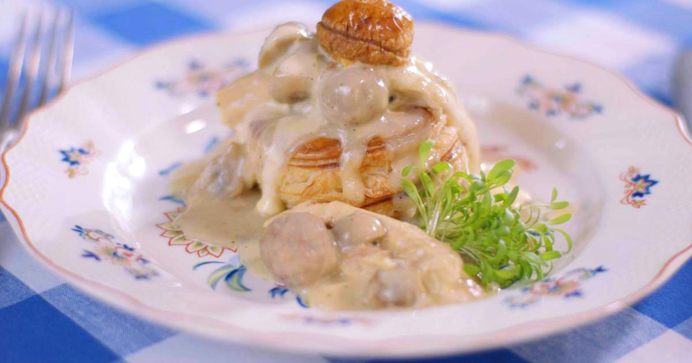

Vol-au-vent
Ingrediënten
- 4 croustades
- 300 gr kippengehakt
- 350 gr champignons
- 125 gr bloem
- 1 scheutje room
- 1 kruidentuiltje
- 1,5 l bouillon
- 1 braadkip
- groentenjulienne
- citroensap
- 125 gr boter
- bladpeterselie
- zout
Bereiding
- Breng het water aan de kook met de kip, de groente julienne, bouillonblokje en het kruidentuiltje. Laat ongeveer een 1 uur koken.
- Haal de kip uit de bouillon, laat ze afkoelen en pluk het vlees van de beenderen. Zeef de bouillon.
- Snij de champignons in stukken en bak ze gaar in wat olijfolie.
- Laat de boter smelten, voeg de bloem toe en roer tot een roux. Doe er al roerend de bouillon bij. Breng op smaak met peper, zout en citroensap. Vermeng de kip, de balletjes en de champignons met de saus.
- erwarm de croustade even in de oven en vul hem met vol-au-vent. Leg er het deksel op en garneer met peterselie. Versnijd aan tafel.
- Maak kleine balletjes van het gehakt en kook ze in de kippenbouillon.